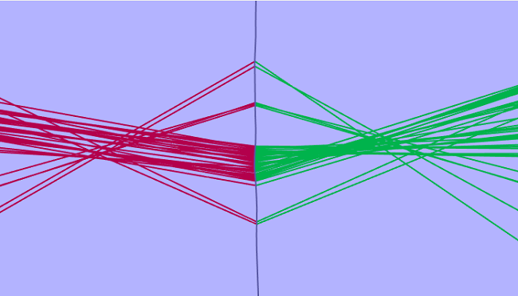

Figure 2

Target motion localisation is used to detect and localise continuously vocalising cetaceans, usually clicking odontocetes. The process requires a moving hydrophone array, usually towed by a vessel and makes the assumptions that during a train of detected clicks the acoustic source is stationary.
These help pages concern themselves mostly with offline analysis of data using the PAMGuard viewer. Those interested in real time / online tracking using the PAMGuard click detector should refer to the Tracking and Click Train Identification section in the Click Detector section of the help.
A towed array will detect a series of different clicks as it moves through the water. The path of the array, often referred to as the trackline, can be estimated by GPS units, accelerometers, gyroscopes and/or heading sensors. If the source is assumed to be stationary then each detected click corresponds to a set of time delays at some position along the trackline. Each set of time delays can be visualised as a 2D or 3D bearing, depending on the towed array, pointing towards the acoustic source. As more clicks are detected more bearings are calculated along the trackline and eventually they should begin to cross around the likely location of the source.
|  |
Figure 1 shows an example of target motion data using a single array of two hydrophones. Each detected click corresponds to a time delay which restricts the source location to a hyperboloid surface. Because the hydrophones are relatively close together this surface can be approximated as a cone and for simplicity Figure 1 represents this cone in 2D as a green and red bearing line. As the track line progresses more clicks are detected and a possible source location can be calculated. Figure 1 shows two possible source locations, where the red lines cross and where the green lines cross. Errors in the location of the array and the obviously incorrect assumption that the vocalising cetacean remains stationary means that the bearings will rarely cross at a single point. In the case of a paired array with a completely straight trackline this will always give two possible locations in 2D and a perfect circle of possible locations in 3D.
However there is often information which can be used to minimise these
errors. The trackline is rarely straight. It 'wobbles' constantly and
therefore breaks the symmetry which results in the circular
distribution of possible locations. This is evident in Figure 1 one
were the green bearings appear to cross through a more consistent
point compared the red bearings. The more the trackline deviates from
a straight line the more the ambiguity in position begins to break
down. Figure 2 shows a 3D localisation attempt of Figure 1 assuming a
relatively high uncertainty in the position of the array.
|
Here the high uncertainty in the position of array masks the small
wobble in the trackline and so a circular probability distribution
results. Note the cetacean is unlikely to be located above the sea
surface so a large chunk of this circular distribution can be
disregarded.
If the uncertainty in the position of
the array is reduced a different probability distribution results.
 |
Figure 3 shows the probability distribution calculated from ther same data as in Figure 2 but assuming an almost perfect knowledge of the array position corresponding to the path of the trackline. Here the wobble in the trackline has resulted in a much tighter probability distribution with the most likely location of the cetacean being almost directly beneath the array.
Localisation results are therefore a combined product of the expected uncertainties in measurements, the design of the towed array and the degree to which the trackline deviates from a straight line. PAMGUARD features multiple localisation algorithms which take all these factors into account.
References
Detection of beaked whales using
near surface towed hydrophones: prospects for survey and mitigation J.
Acoust. Soc. Am. Volume 123, Issue 5, pp. 3774-3774 (2008)